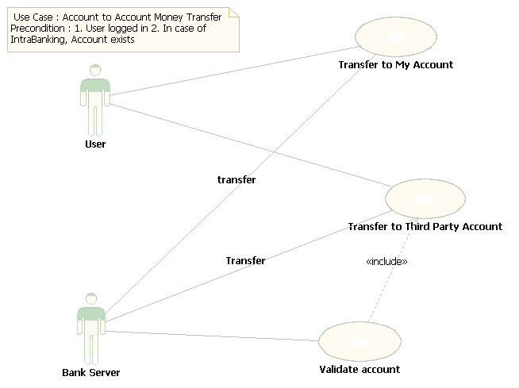

Internet Banking System
Use Case: Account to Account
Money Transfer

Fig-
5.1.1 Account to Account Money Transfer.
Following are the specifications for this Use Case-
Actors:
· Customers, Entrepreneurs, Industrialists, Organizations, Administrators, etc.
Pre-Conditions
· User is already logged in.
Post-Conditions
· Account balance is in consistent state.
Basic Flow
· The user will select an account from existing accounts to make the transfer of money.
· In case of 3rd party account, the user will provide the account number.
· In this case, the account number will be validated by the server.
· User will input the amount to be transferred.
· The user will be asked for Transaction password.
· Transaction will be committed.
· User will be informed.
Alternate Flow : Invalid Third party account number
· The User will be informed that account number is invalid.
· Control will be returned to the first page.